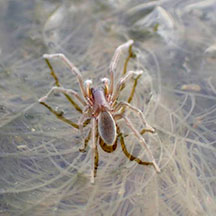
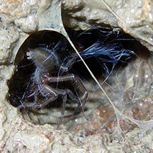
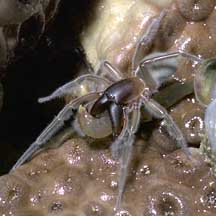
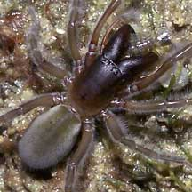
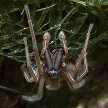
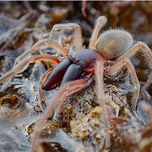

|
|
| arthropods text index | photo index |
| Phylum Arthropoda > Class Arachnida |
| Marine
spider Desis martensi Family Desidae updated Nov 2019 Where seen? This energetic little spider is commonly seen on many of our shores at low tide: constantly on the move, scurrying about among rocks, coral rubble or corals. It is more active at night and can be quite abundant, with many seen on one trip. This spider was described from Singapore and the type specimen was collected at the coral reefs fringing the island now known as Sentosa. Features: Body to about 1cm long. Its head and huge jaws are smooth maroon, body and legs are furry, greyish sometimes with a pink tinge. At high tide, it hides in air pockets among crevices of submerged rocks, waterproofing these with a mat of silk. It emerges at low tide to hunt. It can 'walk' on water, scuttling rapidly over the water. Hairy feet and long legs, which distribute its weight, prevents it from breaking the water surface tension. |
 'Walking' on water. Cyrene Reef, Mar 18 Photo shared by Liz Lim on facebook. |
 The spider's high tide shelter? St John's Island, Jul 09 Photo shared by Loh Kok Sheng on flickr. |
| What does it eat? These spiders have been seen clutching in their jaws all kinds of animals including shore
crickets, sea
slaters and little shrimps. Baby spiders: Egg cocoons are placed in waterproofed tubes sealed with silk. Status and threats: The Marine spider is listed as 'Vulnerable' on the Red List of threatened animals of Singapore. According to the Singapore Red Data Book: "Loss of the natural intertidal zone in reefs and rocky shores would threaten its survival." |
 Caught a shrimp almost as big as itself! Tuas, May 05 |
 Caught a Sea slater? Sentosa, Mar 05 |

| Marine spiders on Singapore shores |
On wildsingapore
flickr
|
| Other sightings on Singapore shores |
 Cyrene, Feb 26 Photo by Yan Le Su on facebook. |
 Washed up on the shore. Terumbu Bemban, Aug 25 Photo shared by Jayden Kang on facebook. |
| Family
Desidae recorded for Singapore from Wee Y.C. and Peter K. L. Ng. 1994. A First Look at Biodiversity in Singapore in red are those listed among the threatened animals of Singapore from Davison, G.W. H. and P. K. L. Ng and Ho Hua Chew, 2008. The Singapore Red Data Book: Threatened plants and animals of Singapore.
|
|
Links
References
|